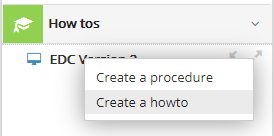

Create the document
To create a UI help brick, go to Documentation Types.
Each document type has two levels: a 'chapter' level and a 'document' level. The names change for each type, but the principle remains the same:
| Document type | Chapter | Document |
| How-tos | Procedure | How-to |
| Concepts | Theme | Concept |
| Training | Course | Unit |
| Q&A | Category | Question |
| Glossary | Theme | Term |
| Release Notes | N/A | Notes |
To create a document at the root of the tree, right-click on the highest item and select Create an [item].

You can also create documents under existing chapters or documents to create a tree structure.
The following window opens:

The window is the same for chapters and documents.